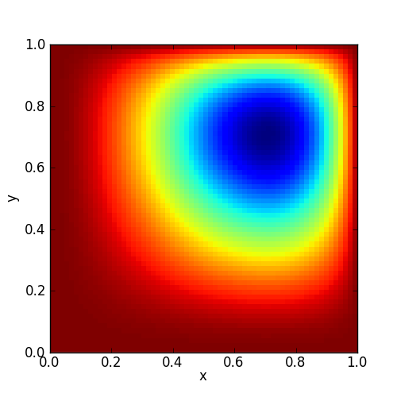

Multigrid solvers
pyro solves elliptic problems (like Laplace’s equation or Poisson’s equation) through multigrid. This accelerates the convergence of simple relaxation by moving the solution down and up through a series of grids. Chapter 9 of the pdf notes gives an introduction to solving elliptic equations, including multigrid.
There are three solvers:
The core solver, provided in the class
MG.CellCenterMG2dsolves constant-coefficient Helmholtz problems of the form \((\alpha - \beta \nabla^2) \phi = f\)The class
variable_coeff_MG.VarCoeffCCMG2dsolves variable coefficient Poisson problems of the form \(\nabla \cdot (\eta \nabla \phi ) = f\). This class inherits the core functionality fromMG.CellCenterMG2d.The class
general_MG.GeneralMG2dsolves a general elliptic equation of the form \(\alpha \phi + \nabla \cdot ( \beta \nabla \phi) + \gamma \cdot \nabla \phi = f\). This class inherits the core functionality fromMG.CellCenterMG2d.This solver is the only one to support inhomogeneous boundary conditions.
We simply use V-cycles in our implementation, and restrict ourselves to square grids with zoning a power of 2.
The multigrid solver is not controlled through pyro_sim.py since
there is no time-dependence in pure elliptic problems. Instead, there
are a few scripts in the multigrid/ subdirectory that demonstrate its
use.
Examples
multigrid test
A basic multigrid test is run as (using a path relative to the root of the
pyro2 repository):
./pyro/multigrid/examples/mg_test_simple.py
The mg_test_simple.py script solves a Poisson equation with a
known analytic solution. This particular example comes from the text
A Multigrid Tutorial, 2nd Ed., by Briggs. The example is:
on \([0,1] \times [0,1]\) with \(u = 0\) on the boundary.
The solution to this is shown below.
Since this has a known analytic solution:
We can assess the convergence of our solver by running at a variety of resolutions and computing the norm of the error with respect to the analytic solution. This is shown below:

The dotted line is 2nd order convergence, which we match perfectly.
The movie below shows the smoothing at each level to realize this solution:
You can run this example locally by running the mg_vis.py script:
./pyro/multigrid/examples/mg_vis.py
projection
Another example uses multigrid to extract the divergence free part of a velocity field. This is run as:
./pyro/multigrid/examples/project_periodic.py
Given a vector field, \(U\), we can decompose it into a divergence free part, \(U_d\), and the gradient of a scalar, \(\phi\):
We can project out the divergence free part by taking the divergence, leading to an elliptic equation:
The project-periodic.py script starts with a divergence free
velocity field, adds to it the gradient of a scalar, and then projects
it to recover the divergence free part. The error can found by
comparing the original velocity field to the recovered field. The
results are shown below:

Left is the original u velocity, middle is the modified field after adding the gradient of the scalar, and right is the recovered field.
Exercises
Explorations
Try doing just smoothing, no multigrid. Show that it still converges second order if you use enough iterations, but that the amount of time needed to get a solution is much greater.
Extensions
Implement inhomogeneous dirichlet boundary conditions
Add a different bottom solver to the multigrid algorithm
Make the multigrid solver work for non-square domains